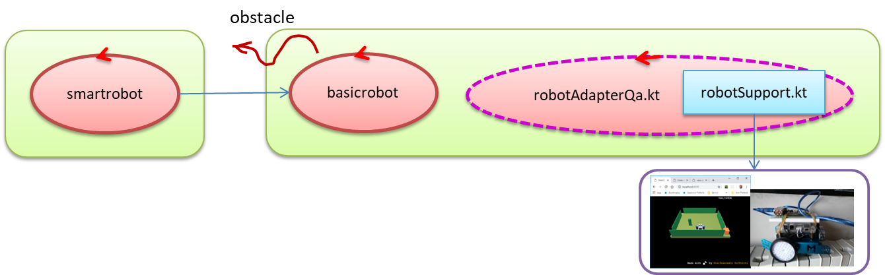

Requirements
In our previous
SPRINT related to the problem of
Lab2_2020.html, we introduce the idea of delegating to a
smartrobot the responsibility of the requirements
req-step and
req-stop.
The envisaged architecture was introduced by the following informal picture:

The
basicrobot simply implements the
req-cmd of
Lab2_2020.html, by leaving to the
smartrobot the task to implement the requirements
req-step/
req-stop.
Thus, as a result of our first
SPRINT-review meeting, the working team could introduce the following requirements for the
next SPRINT:
Design and build a new 'resource / service' (smartrobot) that, with reference to our already developed resource/service basicrobot of
Lab2_2020.html, is able to receive via Internet textual commands, so that:
- requirement req-cmd: the basic-commands (w | s | h | a | d) are simply redirected to the basicrobot.
- requirement req-step: the command step moves forward the basicrobot for a given step-time, specified in the step command .
- requirement req-stop: the command stop stops 'immediately' the smartrobot even it is still executing the command step.
Since the command step can be 'interrupted' by a stop or by the presence of an obstacle,
it might terminate in two different modes:
- with success, if the robot stops after the given step-time;
- with failure, if the robot stops after an elapsed-time less then the given step-time.
Therefore, we add also the following requirements:
- requirement req-step-result: the smartrobot provides information about the result (success or failure) of the command step;
- requirement req-step-time: when the command step ends with a failure, the smartrobot provides
information about the elapsed-time;
- requirement req-step-info: the smartrobot makes the basicrobot able to known
the result of the command step and, in the case of failure the value of the elapsed-time.
.
Requirement analysis
Our requirement analysis can be formally expressed by the following qak-model:
Messages and actors
System smartrobot
Dispatch cmd : cmd(X)
Dispatch step : step(DURATION)
Dispatch stop : stop
Event obstacle : obstacle( DISTANCE )
Context ctxSmartRobot ip [ host= "localhost" port= 8020 ]
Context ctxBasicRobot ip [ host= "192.168.1.6" port= 8018 ]
ExternalQActor basicrobot context ctxBasicRobot
|
- The system is composed of the smartrobot that uses the basicrobot 'service'.
- All the commands are at the moment modeled as dispatches.
- The event obstacle is emitted by the basicrobot when it hits an obstacle.
|
Startup of the smartrobot
QActor smartrobot context ctxSmartRobot{
["
var StepTime = 1000L; //to be set by the step command
var Duration=0 //to be set after the step command
"]
State s0 initial{ println("smartrobot start") }
Goto work
State work{ }
Transition s0
whenMsg cmd -> handleCmd
whenMsg step -> doStep
whenMsg stop -> handleStopNotExpected
State handleStopNotExpected{
println("smartrobot | WARNING: stop command should not be sent here")
}
Goto work
|
The smartrobot waits for a command.
It takes care also of stop commands sent by error.
|
REQUIREMENT: req-cmd
State handleCmd {
printCurrentMessage
onMsg( cmd : cmd(X) ){ forward basicrobot -m cmd : cmd( $payloadArg(0) ) }
}
Goto work
|
The smartrobot redirects the commands to the basicrobot.
|
REQUIREMENT: req-step
State doStep{
onMsg( step : step( T ) ){
["StepTime = payloadArg(0).toLong()"]
["startTimer()"] //a built-in operation
forward basicrobot -m cmd : cmd( w )
}
}
Transition t0
whenTimeVar StepTime -> endStep
whenMsg stop -> stepStop
whenEvent obstacle -> stepFail
State endStep{
forward basicrobot -m cmd : cmd( h )
println("smartrobot | step SUCCESS ")
//TODO: req-step-result
//TODO: req-step-info => succes
}
Goto work
|
The smartrobot starts a timer, sends a w command to the bascirobot and waits for the end of the StepTime
or for a stop command or for an obstacle event.
If the StepTime expires, the smartrobot must fulfill the requirements req-step-result and req-step-info.
Afterwards, it returns to the state work.
|
REQUIREMENT: req-stop
State stepStop{
["Duration=getDuration()"] //getDuration is built-in in the actor (with ref. to startTimer)
forward basicrobot -m cmd : cmd( h )
println("smartrobot | step FAILURE (stop) AFTER Duration=$Duration ")
//TODO: req-step-result => result=failure, reason=stop
//TODO: req-step-time => elapsed-time = Duration
//TODO: req-step-info => elapsed-time = Duration
}
Goto work
|
If the stop command arrives before that StepTime expires, the smartrobot must stop the robot and
fulfill the requirements req-step-result, req-step-time and req-step-info.
Afterwards, it returns to the state work.
The state stepFail is quite similar to stepStop: the only difference is about the reason of the failure
(obstacle).
|
Problem analysis
Modelling the interaction by using a request-response pattern.

Test plans
Testing
Maintenance